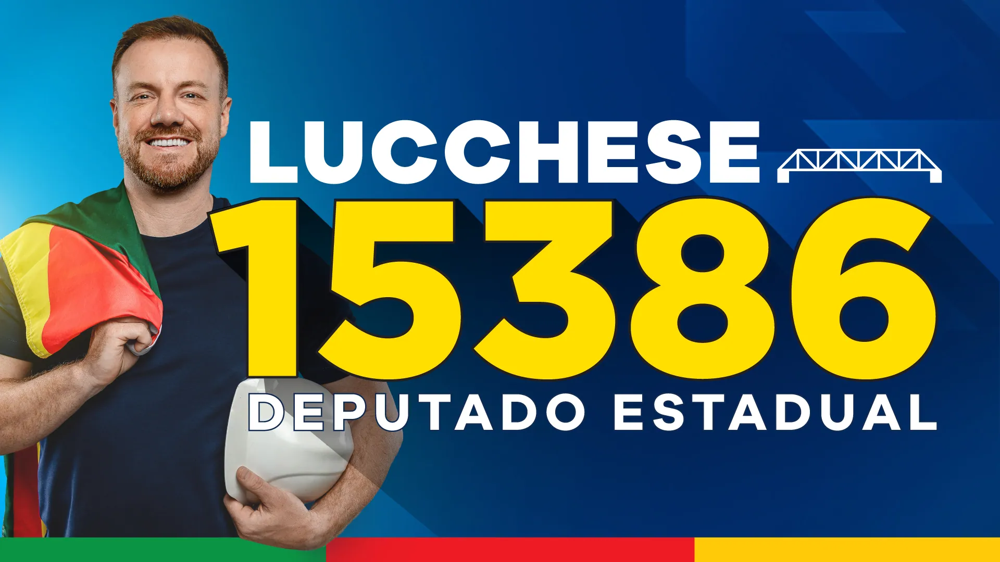
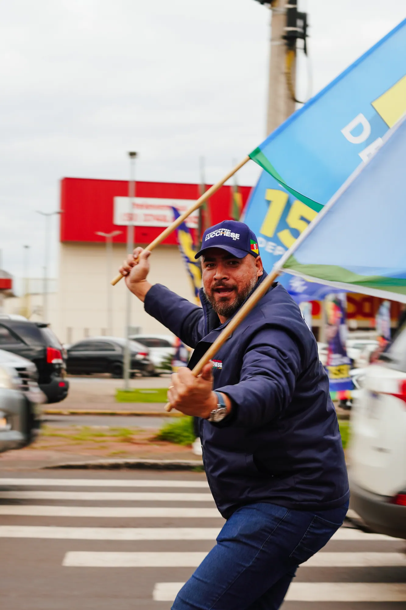
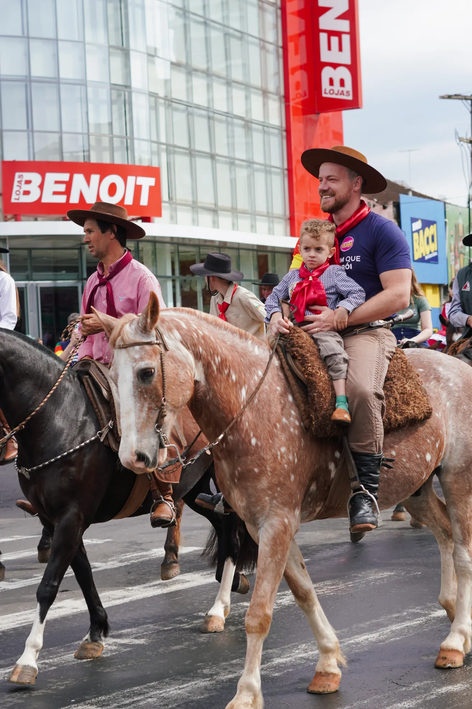
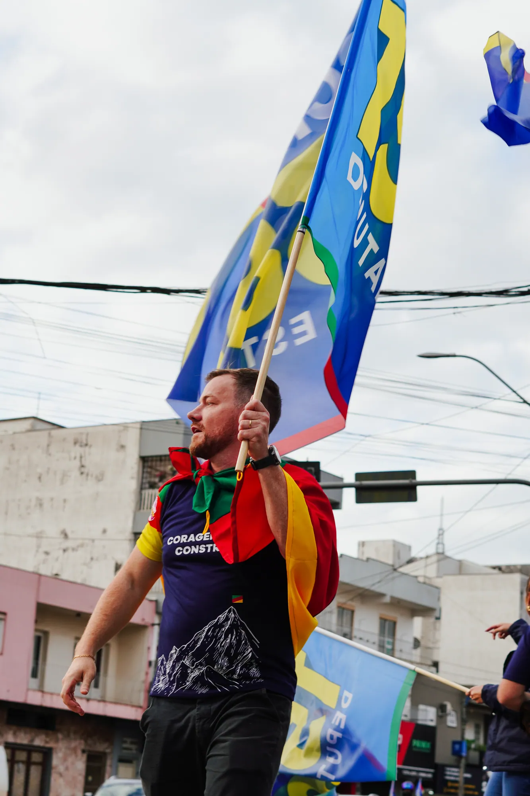
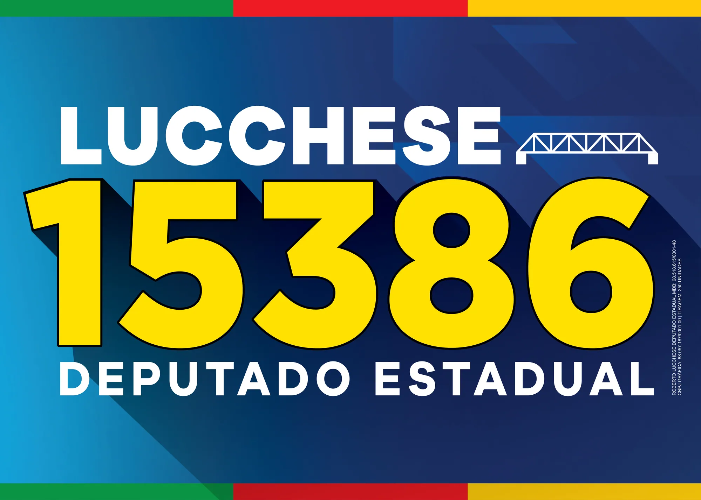
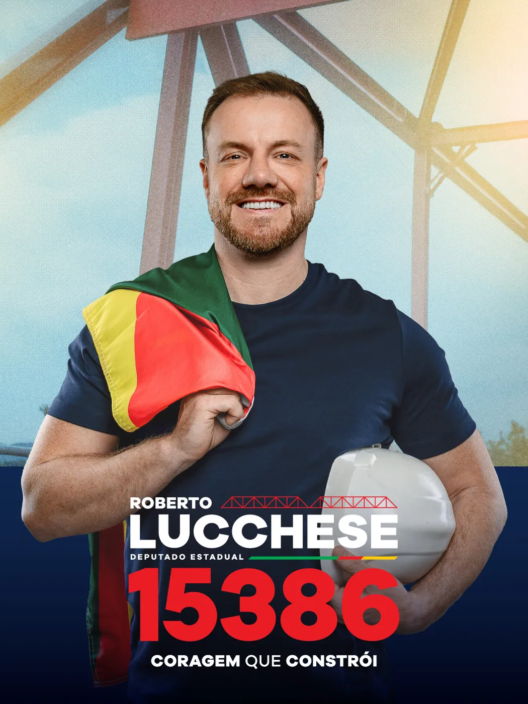
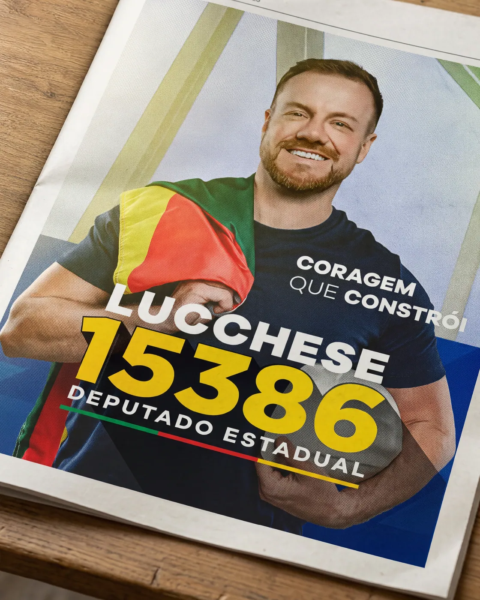

Case · Política
Roberto Lucchese.

Para Roberto Lucchese, construímos uma identidade em que o número é o protagonista, legível em qualquer formato e a qualquer distância. Coragem que constrói amarrou a narrativa do Vale ao Estado.
A identidade
O azul traz sobriedade e segurança, as cores do Rio Grande reforçam as raízes e o número 15386 ganha destaque em tudo, da bandeira ao santinho.
A campanha
Coragem que constrói como conceito e Unindo nosso Vale como linha regional, com peças personalizadas para cada cidade.
O que entregamos
Cerca de 30 anúncios de jornal, santinhos, colinhas colecionáveis por cidade, wind banners, bandeiras, fachadas, perfurites, cards digitais e conteúdo diário.
Resultado
71.720votos na eleição de 2026
344municípios com votos

Bandeiraço, setembro de 2026

Desfile de 20 de setembro

A marca nas ruas



Coragem que constrói.